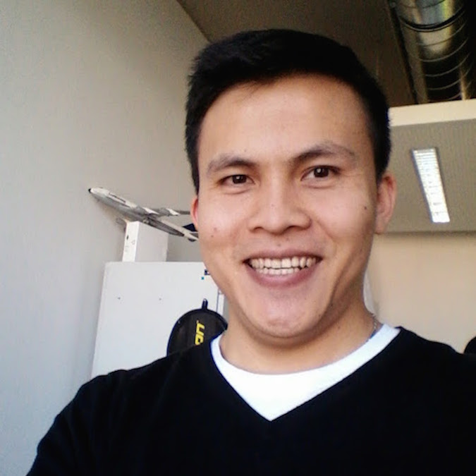

Le Quoc Do 
Principal research engineer at Huawei Munich Research Center
Munich, Germany
Git repository: 
Email: lequocdo@gmail.com
About Me
I'm a principal research engineer at Huawei Munich Research Center. Before joining Huawei, I was a co-founder of Scontain GmbH
which builds confidential computing services for customers.
I obtained a PhD (Dr. -Ing.) from TU Dresden under supervision of Prof. Dr. Christof Fetzer and Prof. Dr. Pramod Bhatotia in Jan 2018.
During my Ph.D., I’ve been lucky to have fruitful internship/collaboration with Bell Labs. Prior to joining TU Dresden, I received my master degree in computer science from Pohang University of Science and Technology (POSTECH), Korea in 2012 under the supervision of Prof. Dr. James Won-Ki Hong.
My research interests encompass a wide range of topics in computer systems, such as distributed systems, data analytics systems, machine learning systems, system security, and cloud computing. Currently, I am particularly passionate about developing secure, privacy-preserving, and scalable machine learning systems using Trusted Execution Environment (TEE) technologies, including Intel SGX/TDX, AMD SEV SNP, ARM CCA, and Huawei QingTian Enclaves.
All publications: 
Selected Publications
-
Accelerating Transfer Learning with Near-Data Computation on Cloud Object Stores, Diana Petrescu, Arsany Guirguis, Do Le Quoc, Javier Picorel, Rachid Guerraoui, Florin Dinu, in proceedings of the 15th ACM Symposium on Cloud Computing(SoCC), Redmond, WA, USA, 2024.
-
SinClave: Hardware-assisted Singletons for TEEs, Franz Gregor, Robert Krahn, Do Le Quoc, Christof Fetzer, in proceedings of the 24th International Middleware Conference (Middleware), Bologna, Italy, 2023.
-
Avocado: A Secure In-Memory Distributed Storage System, Maurice Bailleu, Dimitra Giantsidi, Vasilis Gavrielatos, Do Le Quoc, Vijay Nagarajan, Pramod Bhatotia, in proceedings of the USENIX Annual Technical Conference (USENIX ATC), Santa Clara, CA, USA, 2021 (online).
-
Enclaves in the Clouds: Legal considerations and broader implications, Jatinder Singh, Jennifer Cobbe, Do Le Quoc, Zahra Tarkhani, in ACM Queue journal, 2021.
-
secureTF: A Secure TensorFlow Framework, Do Le Quoc, Franz Gregor, Sergei Arnautov, Roland Kunkel, Pramod Bhatotia, Christof Fetzer, in proceedings of the 21st International Middleware Conference (Middleware), Delft, Netherlands, 2020 (online).
-
TEEMon: A continuous performance monitoring framework for TEEs, Robert Krahn, Donald Dragoti, Franz Gregor, Do Le Quoc, Valerio Schiavoni, Pascal Felber, Clenimar Souza, Andrey Brito, Christof Fetzer, in proceedings of the 21st International Middleware Conference (Middleware), Delft, Netherlands, 2020 (online).
-
A practical approach for updating an integrity-enforced operating system, Wojciech Ozga, Do Le Quoc, Christof Fetzer,in proceedings of the 21st International Middleware Conference (Middleware), Delft, Netherlands, 2020 (online).
-
Palaemon: A Managed Trusted Service for Secrets and Configuration Management, Franz Gregor, Wojciech Ozga, Sébastien Vaucher, Rafael Pires, Do Le Quoc, Sergei Arnautov, André Martin, Valerio Schiavoni, Pascal Felber, and Christof Fetzer, inn proceedings of the Annual EEE/IFIP International Conference on Dependable Systems and Networks (DSN), Valencia, Spain, 2020 (online).
-
SGX-PySpark: Secure Distributed Data Analytics, Do Le Quoc, Franz Gregor, Jatinder Singh, and Christof Fetzer, in the International World Wide Web Conference (WWW), San Francisco, CA, USA, 2019. (This work now is running in production on Microsoft Azure).
-
ApproxJoin: Approximate Distributed Joins, Do Le Quoc, Istemi Ekin Akkus, Pramod Bhatotia, Spyros Blanas, Ruichuan Chen, Christof Fetzer, and Thorsten Strufe, in the ACM Symposium on Cloud Computing (SoCC), Carlsbad, CA, USA, 2018.
-
ApproxIoT: Approximate Analytics for Edge Computing, Zhenyu Wen, Do Le Quoc, Pramod Bhatotia, Ruichuan Chen, Myungjin Lee, in the 38th International Conference on Distributed Computing Systems (ICDCS), Vienna, Austria, 2018.
-
StreamApprox: Approximate Computing for Stream Analytics, Do Le Quoc, Ruichuan Chen, Pramod Bhatotia, Christof Fetzer, Volker Hilt, and Thorsten Strufe, in 17th International Middleware Conference (Middleware), Las Vegas, Nevada, USA, 2017. (This work also has been presented at Flink Forward’17 and Spark Summit Europe’17)
 .
. -
PrivApprox: Privacy-Preserving Stream Analytics, Do Le Quoc, Martin Beck, Pramod Bhatotia, Ruichuan Chen, Christof Fetzer, and Thorsten Strufe, in the USENIX Annual Technical Conference (USENIX ATC), Santa Clara, CA, USA, 2017.
-
IncApprox: A Data Analytics System for Incremental Approximate Computing, Dhanya R Krishnan, Do Le Quoc, Pramod Bhatotia, Christof Fetzer, and Rodrigo Rodrigue, in the 25th International World Wide Web Conference (WWW), Montreal, Canada, 2016.